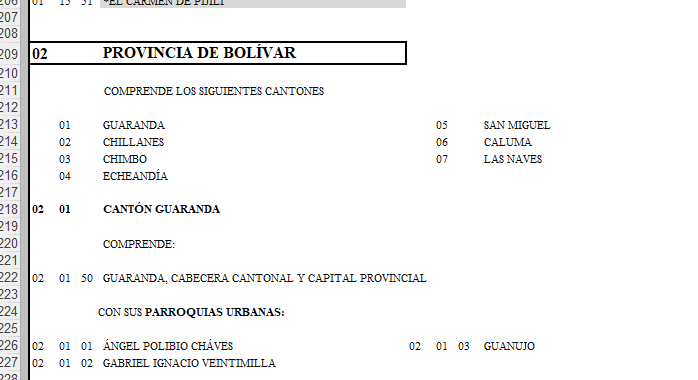

Actividad Propuesta: Análisis Espacial de Amenidades de Salud en Parroquias de Ecuador
Esta actividad te permitirá aplicar y reforzar conceptos clave en el análisis espacial, enfocándote en la relación entre las amenidades de salud y la población a nivel de parroquias en Ecuador. A través de esta práctica, tendrás la oportunidad de trabajar con diferentes fuentes de datos, realizar cálculos de indicadores relevantes, y reflexionar sobre la calidad y precisión de las fuentes de información geográfica. Además, te ayudará a comprender cómo los datos espaciales pueden integrarse y analizarse para obtener insights significativos que apoyen la toma de decisiones.
Parte 1: Identificación y Reflexión sobre las Amenidades de Salud (30 puntos)
Para comenzar, utiliza OpenStreetMap para identificar todas las amenidades de salud disponibles, como hospitales y clínicas, en tu área de estudio. Durante el curso ocupamos al Distrito Metropolitano de Quito pero te motivamos a hacer el análisis con otra parroquia. Te dejamos un enlace para que puedas descargar los códigos DPA de provincias para que puedas buscar una de interés para ti.
Codificación de la División Política Administrativa (DPA)
Este enlace es una descarga directa para un archivo de tipo .xls. Por ejemplo:

Para la parroquia de Guaranda el código DPA es “020150” de la provincia de Bolivar con código “02”. con el cual podrás identificar en las distintas bases de datos a esta parroquia. En OpenStreet maps atraves de la librería osmdata deberás emplear un texto como “Guaranda, Ecuador” en la consulta. La idea es que puedas agregar los resultados de tu consulta a nivel de parroquia con la Geodatabase del INEC.
Con esta tarea, te enfocarás en:
- Identificar y seleccionar amenidades de salud en OpenStreetMap, utilizando funciones como
add_osm_feature()yosmdata_sf()para buscar y filtrar las diferentes categorías de servicios de salud disponibles. - Reportar cuántas amenidades encontraste utilizando funciones como
nrow()para contar los elementos y realizar un análisis inicial de su distribución espacial.
Una vez que hayas identificado estas amenidades, reflexiona sobre los límites y la precisión de los datos obtenidos. Considera la cobertura de OpenStreetMap en tu área de estudio: ¿faltan algunas amenidades? ¿Qué tan representativa es la información en comparación con la realidad observable? Escribe un párrafo compartiendo algunas ideas sobre los límites de OpenStreetMap, y asegúrate de incluir en este párrafo el número total de amenidades de salud que encontraste en tu región de estudio.
Pistas: Puedes utilizar funciones como map(), reduce() para iterar sobre múltiples features y combinar resultados. Piensa en cómo podrías cuantificar y reportar estas amenidades, y cómo podrías estructurar tu reflexión basándote en los datos que encuentras (o no encuentras). Encontrarás la Wiki de Open Street Maps en el enlace:
Parte 2: Unión de Polígonos de Zonas Censales a Nivel de Parroquias (20 puntos)
Después de identificar las amenidades de salud, realiza la unión de los polígonos de las zonas censales a nivel de parroquia. En este punto deberás primero filtrar las zonas censales para una provincia y luego realizar la unión de los poligonos de las zonas censales para armar los polígonos de parroquias.
Descarga el Marco Geoestadístico 2021 o Geodata Base
Con esta tarea, aprenderás a:
- Unir los polígonos de las zonas censales utilizando un identificador común para agrupar los datos por parroquia, utilizando funciones como
st_union()de la libreríasf. - Crear un identificador parroquial que te permitirá analizar la información de salud a este nivel, aplicando
mutate()ystr_sub()dedplyrpara manipular los códigos de zona censal.
Pistas: Para lograr esta unión, piensa en cómo puedes utilizar los identificadores geográficos de las zonas censales, la variable es zon. Por ejemplo, podrías extraer los primeros dígitos del código de zona censal con str_sub() para unificar los datos a nivel parroquial, cantonal o provincial.
Parte 3: Cálculo del Número Total de Amenidades (15 puntos)
Con la información de las parroquias y las amenidades de salud identificadas, realizarás una unión espacial para determinar cuántas amenidades se encuentran dentro de cada parroquia. Para mostrar los resultados de la distribución de hospitales realiza un mapa de calor con la librería ggplot2, te recomendamos revisar las funciones geom_sf, scale_fill_gradient, y theme para darle un formato adecuado a tu gráfico, y la función labs para etiquetarlo adecuadamente. En Quarto tienes opciones como echo, message, fig.height, y otras opciones para presentar tu gráfico con una breve descripción e interpretación.
Con esta tarea, te enfocarás en:
- Realizar una unión espacial utilizando
st_join()de la libreríasf, configurando el argumentojoin = st_withinpara asociar cada amenidad de salud con la parroquia en la que se encuentra. - Contar las amenidades por parroquia para entender mejor la distribución de servicios de salud en tu área de estudio, utilizando funciones como
group_by()ysummarise()dedplyr. - Preparar la información para un análisis de correlación espacial posterior.
- Realizar un mapa de calor y realizar una breve interpretación de la distribución de las amenidades de salud en las parroquias de la provincia que hayan priorizado para el análisis.
Pistas: Primero, realiza la unión espacial con st_join() donde join = st_within para asociar cada amenidad de salud con su respectiva parroquia. Este paso asegura que solo se consideren las amenidades que están dentro de los límites de cada parroquia. Luego, utiliza group_by() para agrupar los datos por parroquia y summarise() para contar cuántas amenidades existen en cada una. Este conteo te permitirá analizar la densidad y distribución de servicios de salud en las diferentes parroquias.
Parte 4: Cálculo del Ratio de Amenidades por Habitante (15 puntos)
A continuación, calcula el ratio del número de amenidades seleccionadas en relación con el número de habitantes por cada 100 habitantes en cada parroquia. Este indicador te permitirá analizar la disponibilidad de servicios de salud en relación con la población. Durante la clase empleamos los resultados de la estructura poblacional del Ecuador, el cual lo puedes volver a descargar en el siguiente enlace.
Resultados Poblacionales 2022 (INEC)
Con esta tarea, aprenderás a:
- Integrar datos de población y amenidades utilizando
left_join()dedplyry calcular un indicador clave de disponibilidad de servicios conmutate(). - Interpretar este indicador en el contexto de la distribución de la población.
- Presentar la distribución del indicador en las parroquias de la provincia de análisis.
Pistas: Piensa en cómo puedes unir los datos demográficos con los de amenidades usando left_join(), y cómo calcular un ratio que refleje la relación entre la cantidad de servicios de salud y la población en cada parroquia con mutate().
Parte 5: Cálculo del Índice de Moran para el Indicador de Amenidades de Salud (20 puntos)
Para profundizar en el análisis espacial, calcularás el Índice de Moran para el indicador de número de amenidades de salud por cada 100 habitantes en las parroquias de una provincia. Este índice te permitirá evaluar si existe autocorrelación espacial en la distribución de las amenidades de salud, lo cual es clave para entender la distribución y concentración de estos servicios en diferentes áreas.
Con esta tarea, te enfocarás en:
- Calcular el Índice de Moran utilizando la función
moran.test()de la libreríaspdep, aplicándolo al indicador que mide el número de amenidades de salud por cada 100 habitantes. - Calcular el Índice de Moran local utilizando la función
localmoran``()de la libreríaspdep, aplicándolo al indicador que mide el número de amenidades de salud por cada 100 habitantes. - Interpretar el resultado del Índice de Moran para determinar si existe un patrón de autocorrelación espacial (positiva, negativa o nula) en la distribución de las amenidades de salud en las parroquias.
Pistas: Primero, asegúrate de haber calculado correctamente el indicador de número de amenidades de salud por cada 100 habitantes en cada parroquia y reempleza los elementos vacios con 0 para los casos en que no existan amenidades. Construye la matriz de vecindad poly2nb con un modelo de vecindad Queen. Luego, construye una matriz de pesos espaciales utilizando la función nb2listw() de la librería spdep. Finalmente, calcula el Índice de Moran con moran.test() y analiza los resultados para entender cómo las amenidades de salud se agrupan o dispersan en el espacio.
Parte 6: Actividad opcional, Análisis de Buffers y Reflexión sobre los Límites de OpenStreetMap (20 puntos)
Para profundizar en tu análisis, crea un buffer de 500 metros alrededor de tu lugar de trabajo, universidad o cualquier lugar de tu elección empleando el elemento con las zonas censales. Verifica si dentro de este buffer se encuentran las amenidades de salud que identificaste previamente. Luego, realiza una caminata por el área del buffer y compara la información obtenida de OpenStreetMap con la realidad observable.
Con esta tarea, te enfocarás en:
- Crear buffers alrededor de puntos de interés utilizando
st_buffer()de la libreríasf, y verificar la presencia de amenidades dentro de esos buffers const_intersects()ost_within(). - Reflexionar sobre las diferencias entre los datos geográficos obtenidos y la realidad observada, evaluando la precisión y los límites de OpenStreetMap.
Pistas: Considera cómo utilizar st_buffer() para crear un área alrededor de tu punto de interés y st_intersects() o st_within() para verificar si hay amenidades dentro de ese área. Reflexiona sobre las limitaciones de los datos geográficos en la práctica y cómo estas diferencias pueden afectar tu análisis.
Entrega del Trabajo (Total: 120 puntos)
Finalmente, entrega tu trabajo como un documento Quarto que combine el código y la narrativa de la actividad, tal como hemos realizado en las actividades anteriores en clase. Este enfoque no solo te permitirá mostrar tus habilidades técnicas, sino que también te ayudará a desarrollar habilidades de documentación y presentación, esenciales para cualquier análisis de datos.
Sube el enlace al repositorio en el Issue de GitHub en el siguiente.
Criterios de evaluación:
- Correcta creación y entrega del documento Quarto combinando texto, código y gráficos.
- Inclusión de un archivo README en GitHub que explique brevemente el contenido del documento y los pasos realizados.
- Claridad y organización en la presentación tanto del documento Quarto como del repositorio en GitHub.
Consejos Finales
Recuerda documentar tu código en el documento Quarto explicando cada paso que realizas. Esto no solo facilita la comprensión de tu trabajo para otros, sino también para ti mismo en el futuro. Revisa tus resultados para asegurarte de que todo está correcto y considera la posibilidad de colaborar con tus compañeros para enriquecer el análisis y el aprendizaje.
Esta actividad te ofrece una oportunidad para aplicar tus conocimientos en un contexto real, desarrollando habilidades que son esenciales en el análisis espacial y en la ciencia de datos en general. ¡Disfruta del proceso de aprendizaje y sigue explorando!